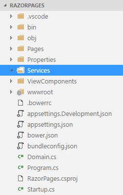
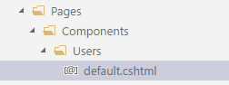
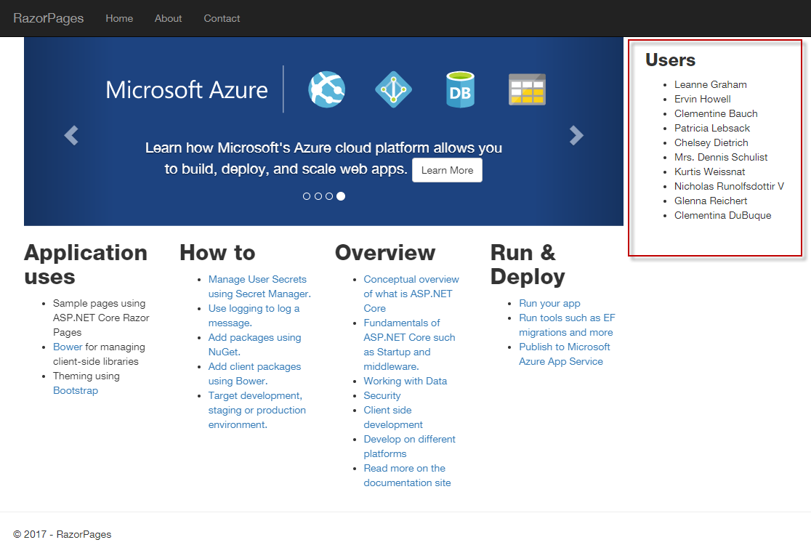
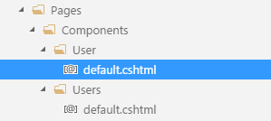
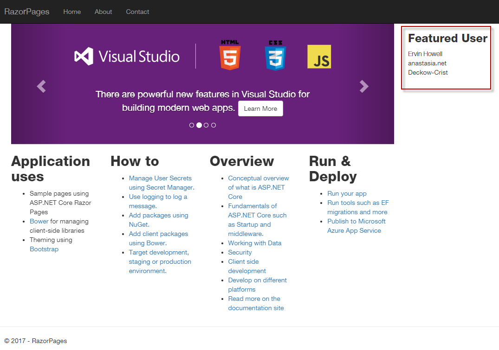

View Components perform a similar role to Tag Helpers and Partial Pages. They generate HTML and are designed to represent reusable snippets of UI that can help break up and simplify complex layouts, or that can be used in multiple pages. View components are recommended instead of partial pages or tag helpers whenever any form of logic is required to obtain data for inclusion in the resulting HTML snippet, specifically calls to an external resource such as a file, database or web service. View components also lend themselves to unit testing.
Examples of use cases for view components include data-driven menus, tag clouds and shopping basket widgets. The content and meta data for this page is read from a Markdown file. A view component is used to perform this task.
Elements of a view component
View components consist of a class file and a .cshtml view file. The class file contains the logic for generating the model. It can be though of as a mini-controller, just as the Razor PageModel file is considered to be a controller. The view file contains the template that's used to generate the HTML to be plugged in to the calling page.
The class file must conform to the following rules:
- It must derive from the
ViewComponentclass - It must have "ViewComponent" as a suffix to the class name or it must be decorated with the
[ViewComponent]attribute (or derive from a class that's decorated with the[ViewComponent]attribute) - It must implement a method named
InvokeAsyncwhich must have a return type ofIViewComponentResult. Typically, this is satisfied by areturn View(...)statement in the method.
By default, the view file is named default.cshtml. You can specify an alternative name for the view file by passing it to the return View(...) statement. The view file's placement within the application's file structure is important, because the framework searches pre-defined locations for it:
/Pages/Components/<component name>/Default.cshtml
/Views/Shared/Components/<component name>/Default.cshtml
The component name is the name of the view component class without the ViewComponent suffix (if it is applied). For a Razor Pages only site, the recommended location for view component views is the /Pages/Components/ directory. The path that begins with /Views should only really be used if you are creating a hybrid Razor Pages/MVC application.
Walkthrough
The following walkthrough will result in two example view components being created. One will call into an external web service to obtain a list of people, and will display their names. The other will take a parameter representing the ID of one person whose details will be obtained from an external web service and then displayed in a widget.
The service APIs used in this example are hosted at JSONPlaceholder which provides free JSON APIs for development and testing purposes.
The view components will not be responsible for making calls to the external APIs. This task will be performed in a separate service class which will be injected into the view components via the built-in Dependency Injection framework.
Create a new Razor Pages site named RazorPages using Visual Studio or the command line.
Add a new C# class file named Domain.cs to the root folder of the application and replace any existing content with the following:
namespace RazorPages { public class User { public int Id { get; set; } public string Name { get; set; } public string UserName { get; set; } public string Email { get; set; } public string Phone { get; set; } public string Website { get; set; } public Address Address { get; set; } public Company Company { get; set; } } public class Address { public string Street { get; set; } public string Suite { get; set; } public string City { get; set; } public string Zipcode { get; set; } public Geo Geo { get; set; } } public class Company { public string Name { get; set; } public string Catchphrase { get; set; } public string Bs { get; set; } } public class Geo { public float Lat { get; set;} public float Lng { get; set; } } }These classes map to the structure of the objects represented by the JSON provided by the API being used for this example.
Add a new folder named Services to the root folder
Add a new C# class file named IUserService.cs to the Services folder. Replace any existing content with the following code:
using System.Collections.Generic; using System.Threading.Tasks; namespace RazorPages.Services { public interface IUserService { Task<List<User>> GetUsersAsync(); Task<User> GetUserAsync(int id); } }This is the interface that specifies the operations offered by the service
Add another new C# class file named UserService.cs to the Services folder and replace any existing content with the following:
using Newtonsoft.Json; using System.Collections.Generic; using System.Net.Http; using System.Threading.Tasks; namespace RazorPages.Services { public class UserService : IUserService { public async Task<List<User>> GetUsersAsync() { using (var client = new HttpClient()) { var endPoint = "https://jsonplaceholder.typicode.com/users"; var json = await client.GetStringAsync(endPoint); return JsonConvert.DeserializeObject<List<User>>(json); } } public async Task<User> GetUserAsync(int id) { using (var client = new HttpClient()) { var endPoint = $"https://jsonplaceholder.typicode.com/users/{id}"; var json = await client.GetStringAsync(endPoint); return JsonConvert.DeserializeObject<User>(json); } } } }This class represents an implementation of the
IUserServiceinterface.Add a folder named ViewComponents to the root of the application. Then add a new file to that folder, name it UsersViewComponent.cs and replace any existing content with the following:
using Microsoft.AspNetCore.Mvc; using RazorPages.Services; using System.Threading.Tasks; namespace RazorPages.ViewComponents { public class UsersViewComponent : ViewComponent { private IUserService _userService; public UsersViewComponent(IUserService userService) { _userService = userService; } public async Task<IViewComponentResult> InvokeAsync() { var users = await _userService.GetUsersAsync(); return View(users); } } }This is the code part of the view component. It makes use of the built-in dependency injection system to resolve the implementation of
IUserServicewhich is injected into the constructor of the view component class. TheInvokeAsyncmethod obtains aList<User>from the service and passes it to the view.Create a folder named Components in the Pages folder and then add another folder named Users to the newly created Components folder. Add a new file named default.cshtml to the Users folder. The resulting folder and file hierarchy should look like this:

Replace the code in default.cshtml with the following:
@model List<RazorPages.User> <h3>Users</h3> <ul> @foreach (var user in Model) { <li>@user.Name</li> } </ul>This is the view, and completes the view component. Notice that the view accepts a model of type
List<User>via the@modeldirective, which is type passed to the view from theInvokeAsyncmethod.Open the Startup.cs file and add
using RazorPages.Services;to theusingdirectives at the top of the file. Then amend theConfigureServicesmethod so that the code looks like this:public void ConfigureServices(IServiceCollection services) { services.AddMvc(); services.AddTransient<IUserService, UserService>(); }This step registers the
IUserServicewith the dependency injection system, and specifies thatUserServiceis the actual implementation to use.Open the Layout.cshtml file and locate the content between the
<nav>section and the<environment>tag helper that currently looks like this:<div class="container body-content"> @RenderBody() <hr /> <footer> <p>© 2017 - RazorPages</p> </footer> </div>Change the content as follows:
<div class="container body-content"> <div class="col-md-9"> @RenderBody() </div> <div class="col-md-3"> @await Component.InvokeAsync("Users") </div> </div> <hr /> <footer class="container"> <p>© 2017 - RazorPages</p> </footer>This converts the layout for the site to 2 columns, with page content displayed in the left hand column and a Users widget displayed in the right hand column. It uses the
Component.InvokeAsyncmethod to render the output of the view component to the page. The string which is passed to the method represents the name of the view component (the class name without the "ViewComponent" suffix).Run the site to ensure that all is working. The list of users should appear on the right hand side of every page:

Taghelper and passing parameters
The second example will demonstrate the use of a tag helper instead of calling the Component.InvokeAsync method. It will also demonstrate passing parameters to the view component.
Add a new C# class file to the ViewComponents folder and name it UserViewComponent.cs. Replace any existing content with the following:
using Microsoft.AspNetCore.Mvc; using RazorPages.Services; using System.Threading.Tasks; namespace RazorPages.ViewComponents { public class UserViewComponent : ViewComponent { private IUserService _userService; public UserViewComponent(IUserService userService) { _userService = userService; } public async Task<IViewComponentResult> InvokeAsync(int id) { var user = await _userService.GetUserAsync(id); return View(user); } } }This is the code part of the view component. The only difference between this component and the previous one is that the
InvokeAsyncmethod expects a parameter of typeintto be passed, which is then passed to the service method.Add a new folder to the /Pages/Components folder named User. Add a Razor file to the folder named default.cshtml. The structure of the Components folder should now look like this:

Replace any existing content in the new default.cshtml file with the following:
@model RazorPages.User <h3>Featured User</h3> <div> <strong>@Model.Name</strong><br /> @Model.Website<br /> @Model.Company.Name<br /> </div>Open the ViewImports.cshtml file and add the following line to the existing code:
@addTagHelper *, RazorPagesThis registers the view component tag.
Replace the call to
@await Component.InvokeAync("Users")in the layout file with the following:<vc:user id="new Random().Next(1, 10)"></vc:user>The name of the view component is specified in the tag helper, along with the parameter for the
InvokeAsyncmethod. In this case, theRandomclass is used to return any number from 1-10 each time the component is invoked, resulting in a user being selected randomly each time the page is displayed.Run the application to test that the component is working, and refresh a few times to see different users' details being displayed:

If you prefer to use the Component.InvokeAsync method, parameters are passed as a second argument:
@await Component.InvokeAsync("User", new Random().Next(1, 10))